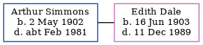

Arthur Simmons 1902 - c1981
[ Home ] | [ Calendar ] | [ Surnames Index ] | [ Census Index ] | [ Family History ]A plasterer, Arthur Simmons, the husband of Edith Kate Dale (the first cousin twice-removed on the father's side of Nigel Horne), was born on May 2, 19021,2. He married Edith (a cashier) in The Register Office, Crowborough, Sussex, England on Nov 2, 19313. On Sep 29, 1939, he was living in Cuckfield, Sussex, England1.
He died c. Feb 1981 in Haywards Heath, West Sussex, England2.
Citations
- 1939 Register - Findmypast (was the head of the household)
- England & Wales deaths 1837-2007 - Findmypast
- England & Wales, Marriage Index: 1916-2005 Online publication - Provo, UT, USA: The Generations Network, Inc., 2009.Original data - General Register Office. England and Wales Civil Registration Indexes. London, England: General Register Office. © Crown copyright. Published by permission of the Cont
Media
1939 Register Transcription - TNA-R39-2546-2546F-004-38
England & Wales deaths 1837-2007 - BMD/D/1981/1/AZ/001095/134
England & Wales marriages 1837-2005 - BMD/M/1931/4/AZ/001096/013
Family Tree
Generated by ged2site. Last updated on Jun 11, 2024